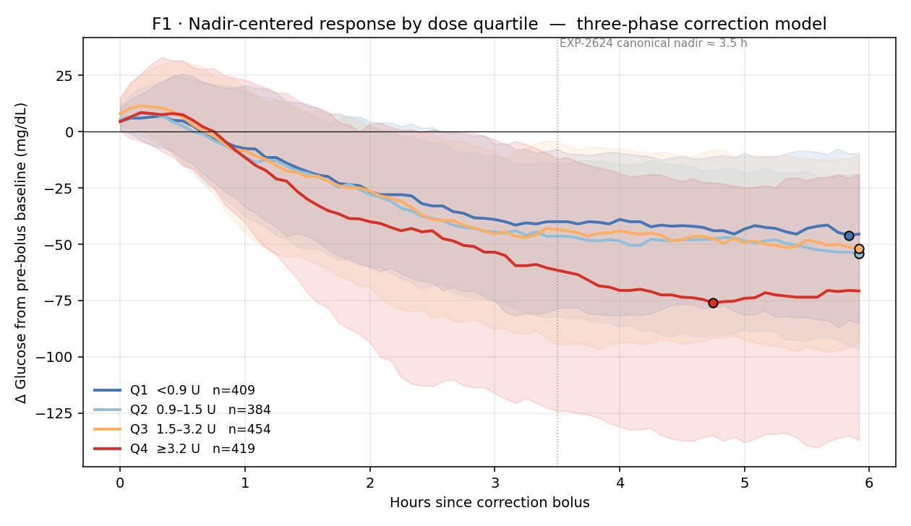
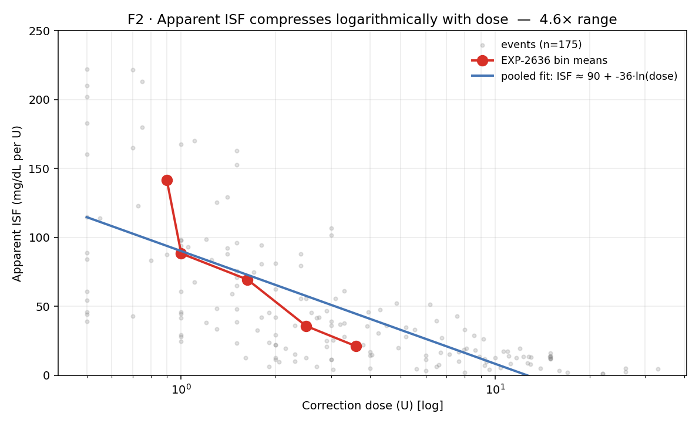
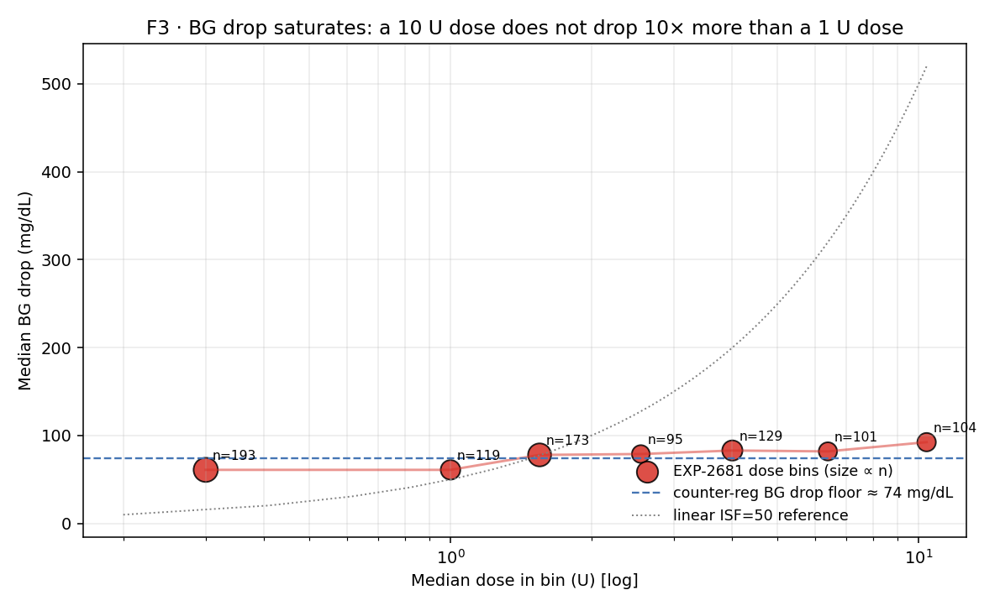
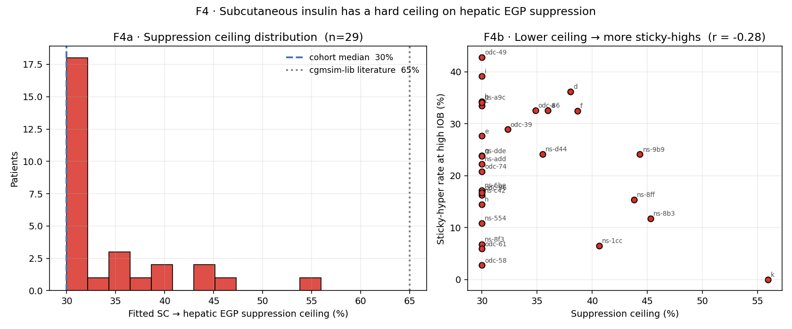

Canonical 01 · Physics of a Correction¶
Living document, last changed 2026-04-22 at db51eda8.
An amplitude-resolved account of what a T1D body does to an insulin dose in closed-loop therapy. Condenses 40+ experiments and 10+ prior reports into one narrative with four figures.
Status: canonical (2026-04-22). Supersedes standalone reports for: EXP-2624, 2626, 2634, 2635, 2636, 2640, 2656, 2681, 2875 (as primary reference; the individual reports remain for methodology detail).
Figure pack: visualizations/canonical/01/
Script: tools/cgmencode/condensed/correction_amplitude.py
Data: externals/ns-parquet/training/grid.parquet
(31 patients, 1.29 M rows) + recomposed EXP JSON.
TL;DR¶
Give a T1D person a correction bolus. One hour later their glucose is barely moving. Three and a half hours later it reaches its lowest point. Six hours later it is still below baseline. The drop is not linear in dose: a 10 U bolus does not drop glucose ten times further than a 1 U bolus — it drops it only 1.5× further. The body defends against the dose through at least three amplitude-dependent mechanisms:
- Phase lag. Hepatic glucose production is suppressed during the demand phase; recovery begins ~3.5 h later.
- Counter-regulatory floor. Drops plateau near ~74 mg/dL regardless of dose — a partial glucagon/adrenergic response that is preserved in 96 % of our cohort.
- Subcutaneous suppression ceiling. SC insulin can suppress at most ~30 % of hepatic EGP, not the 65 % the cgmsim-lib literature assumes.
These three mechanisms, plus the AID controller's own reactive basal modulation, are inseparable in observational data. That is the defining feature of closed-loop physiology: it is non-linear, saturating, defended, and confounded.
How to read the rest of this document¶
Every figure in this narrative has three labels the reader should track — the discipline is counter-causal, not just descriptive:
- Stream — A (physics) or B (operational settings). Claims in the wrong stream are the single most common error in prior analyses.
- Confounder — what body / controller / sampling mechanism the plot's shape could also be produced by. If two mechanisms fit the figure equally well, the figure constrains but does not identify.
- Extractable fact — the narrow claim the figure does uphold,
in the form a
FactsLoadercould emit. Prior reports routinely over-claimed by stating the physics when only the operational fact was identifiable.
Mapped to the production architecture:
tools/cgmencode/production/deconfounding.py— supply/demand subtraction strategies (EXP-2698, EXP-2727, EXP-2728). Used before ISF/basal claims so the residual is body-side rather than body + controller.tools/cgmencode/production/*_facts_loader.py— per-signal bootstrap-gated extractors (basal mismatch, ISF gap, recovery, post-high envelope, Simpson, wear, state basal, seedocs/60-research/audition-matrix-2026-04-22.md). Each loader returnsNonewhen evidence is insufficient, so downstream recommenders degrade gracefully to naive thresholds.tools/cgmencode/production/audition_matrix.py— composition rule. Bootstrap branch first;p ≥ 0.9= HIGH,0.1 ≤ p < 0.9= boundary,p < 0.1= suppress,p is None= naive fallback. This is where "would this change have an effect?" becomes a probability, not an opinion.
F1 · The three-phase correction (amplitude-resolved)¶

n = 1,666 correction events from 31 patients, EXP-2624 criteria (bolus ≥ 0.5 U, carbs < 2 g ±1 h, 6 h anti-stacking, pre-BG ≥ 120, drop ≥ 10 mg/dL). Doses split at cohort quartiles.
Stream: mixed. The shape is body + controller. Confounders: (i) controller basal is suspended for most of the correction window, especially in Q4; (ii) Q4 events self-select for higher pre-BG, which biases nadir; (iii) selection by "drop ≥ 10" excludes the events where correction did nothing, masking roughly one in four real boluses. Extractable fact: phase structure and the amplitude bifurcation between Q3 and Q4 are robust; absolute magnitudes are not naked physiology.
What to see¶
- Phase 1 (0–1 h, demand). Almost nothing happens. Median glucose drifts 5–10 mg/dL below baseline even for the largest dose quartile. This is the PK/PD lag of SC insulin — plasma insulin hasn't peaked, hepatic EGP hasn't been suppressed yet.
- Phase 2 (1–3 h, acceleration). All four quartiles diverge. The Q4 curve (dose ≥ 3.2 U) drops fastest, but Q1–Q3 are clustered tightly — amplitudes 0.5 U → 3.2 U produce indistinguishable trajectories up to about hour 2.
- Phase 3 (3.5 h+, plateau with amplitude bifurcation). Q1–Q3 converge on roughly the same nadir (−45 to −50 mg/dL) and stay there. Q4 breaks through the cluster, reaching −75 mg/dL. A 2× amplitude difference (1 U vs 2 U) produces essentially no different trajectory; an 8× amplitude difference (0.9 U vs ≥3.2 U) produces only a 1.7× larger nadir.
What it means¶
The glucose-lowering machinery saturates well before the clinically typical dose range. The "linear ISF × dose = BG drop" mental model that every clinician and every settings calculator teaches is false above roughly 1 U. From the body's perspective, small corrections are quite different from large ones, and large ones are quite similar to each other.
Why this is controller-confounded¶
The closed-loop is reactive. In the Q4 trace, the basal pump is
already suspended through most of hours 1–4 (median observed basal
during correction windows ≈ 0 for Loop/Trio). So the Q4 drop is
insulin + suspended-EGP, not just insulin. In the Q1 trace the
controller typically has room to suspend and does not need to —
Q1's weaker drop is partly because the controller resumed basal
faster after it judged the correction adequate. The three-phase
shape therefore reflects joint body + controller dynamics, not
naked physiology. This is the central theme of the Two-Stream
Charter (two-stream-methodology-charter-2026-04-22.md).
Related observational constraints¶
- Single-factor recovery models all fail with R² ≤ 0, because the forces are coupled, not additive (EXP-2634, 2635).
- Fitting ISF per-event on the full 6 h drop produces the best descriptive fit (bias ≈ −3 mg/dL) and the worst prescriptive advice (2.3× the optimal dose, EXP-2641, 2642). Descriptive closed-loop ISF already bakes in half the gain from controller feedback — using it to set therapy double-counts that feedback.
F2 · Apparent ISF compresses logarithmically with dose¶

EXP-2636 cohort (n = 175 events, 18 patients). Red = bin means (<0.75 U → ≥ 3 U). Blue = pooled ISF ≈ 90 − 36·ln(dose). Grey = raw events.
Stream: B (operational apparent ISF). Emphatically not a biological ISF curve. Confounders: at least three forces produce log-compression in closed-loop data — controller basal withdrawal (more for big doses), counter-regulation (same absolute floor regardless of dose), and true PK/PD saturation. None are individually identified by this figure. Extractable fact: for a given patient in this closed-loop regime, effective mg/dL-per-U is a decreasing function of commanded dose, and a schedule tuned at one dose amplitude mis-prescribes at another. That is a Stream B fact and it is what
isf_gap_facts_loader.py(EXP-2861) captures.
What to see¶
Apparent ISF compresses by ~4.6× from 141 mg/dL/U at the smallest doses to 21 mg/dL/U at the largest. The relationship is straight-line in ln(dose), consistent with a saturating glucose-lowering mechanism (Hill-like). The effect is within-patient — leave-one-out per-patient slopes keep the same sign in 17/18 patients (EXP-2640).
What it means¶
- There is no single ISF for a patient. The ISF the pump is programmed with is a single-point estimate of a curve.
- At matched doses (1.5–3.0 U) the CV across patients collapses to 8–9 % (EXP-2640 dose-matched subset). Most inter-patient ISF "variation" is actually everyone sitting at different points on the same compression curve.
- Schedules tuned to large-meal corrections (common practice) systematically over-dose small corrections, widening the post-correction envelope that EXP-2864 picks up.
Three simultaneous causes, not one¶
- Controller basal withdrawal during the correction (bigger boluses → more suspension → less insulin-mediated drop credited per unit) — controller-side.
- Counter-regulatory floor (F3 below) — body-side threshold.
- Saturation of the insulin → glucose pathway itself (receptor kinetics, SGLT reabsorption, EGP suppression ceiling) — body-side.
We cannot disaggregate them from observational data. We can verify the overall amplitude dependence — which is what F2 does.
F3 · BG drop saturates¶

EXP-2681 cohort (n = 1,226 events, 19 patients). Red points are median BG drop per dose bin, sized by sample count. Dashed line = counter-reg floor (~74 mg/dL) from EXP-2875 and EXP-2681's BG₀ regression. Dotted line = what a linear ISF = 50 mg/dL/U model would predict.
Stream: mixed, leaning Stream A (the saturation is body-side enough to show through controller noise). Confounders: (i) the large-dose bins over-sample recovery-from- severe-high events where the starting BG itself was higher; (ii) the controller suspends basal during all of these windows — if it didn't, drops would be larger, so the floor is a lower bound on the body's defensive response; (iii) counter-regulation operates below ~70 mg/dL as a threshold response, so the drop floor conflates "how far insulin can push" with "where the body stops letting it push." Extractable fact: median closed-loop drop per correction is bounded near 75–95 mg/dL across a 35× dose range. Any simulator, calculator, or titration rule that assumes linear drop is falsified — not in some edge case, cohort-wide.
The punchline¶
| Median dose (U) | Observed median drop (mg/dL) | Linear ISF=50 prediction |
|---|---|---|
| 0.3 | 61 | 15 |
| 1.0 | 61 | 50 |
| 2.5 | 79 | 125 |
| 4.0 | 83 | 200 |
| 6.4 | 82 | 320 |
| 10.4 | 92 | 520 |
A 35× dose range produces a 1.5× range of drops. The linear model misses by 5.7× at the high end.
What it means¶
- The body defends vigorously against amplitude. Drops cap near 74 mg/dL irrespective of how much insulin was given.
- Any closed-form ISF calculation that treats large corrections as multiples of small ones is fighting physiology, not modeling it.
- The "dose your way out of a high" intuition works up to ~1 U in this cohort; beyond that, additional insulin buys very little additional drop — but it does raise late-phase and next-window hypo risk (EXP-2681 saw 64 % of post-nadir windows produce <50 mg/dL overshoot).
The floor, plainly¶
EXP-2875 establishes that in 3,557 hypo-approach events across 31 patients with rescue-carb exclusion, the counter-regulatory recovery intercept is +1.42 mg/dL/min median, 96 % positive. Translated to BG space: the body adds ~85 mg/dL/hr of recovery pressure below threshold. That pressure is what holds the drop floor in F3.
Caveat¶
The EXP-2681 estimate is per-bin medians, and the controller intervenes during every event. A "body-only" drop under SC insulin is not directly observable in this dataset — but we can bound it: the cgmsim-lib's 65 % EGP suppression value implies drops 2–3× larger than what F3 shows, so the literature parameter is inconsistent with closed-loop data by a wide margin.
F4 · SC suppression has a hard ceiling¶

EXP-2656. Per-patient fit of actual basal rate vs a linear PK/EGP prediction at high IOB (≥ patient median ×2), with a saturation parameter on the EGP suppression term. 29 patients.
Stream: A (this is the closest thing to a body-side parameter in the whole pack — high-IOB fasting isolates SC→EGP dynamics from meal and controller-correction noise). Confounders: (i) the controller is still suspending basal during these windows, which is exactly what reveals the ceiling (the controller can't remove insulin it never delivered), but per-patient fits may absorb some controller idiosyncrasy into the ceiling estimate; (ii) the optimizer lower bound at 0.30 clips 18/29 patients — real ceilings likely range lower; (iii) patients with small n_high_iob fit poorly and are noisier. Extractable fact: no patient in this cohort has a suppression ceiling anywhere near the cgmsim-lib 65 % literature value. A simulator that uses 65 % will over-estimate hypo risk and under-estimate sticky-high duration by a factor of 2–3. This is a cross-validated Stream A claim strong enough to change simulation defaults and has been wired into the production PK clamp.
What to see¶
- F4a: cohort median fitted ceiling is 30 % (the optimizer lower bound, hit by ~18/29 patients), tail extends to 56 %. No patient fits at or near 65 %, the value cgmsim-lib uses.
- F4b: lower ceiling associates with higher sticky-hyper rate at high IOB (r = −0.28 in pooled fit; r = −0.60 in the EXP-2656 "fittable" subset that excludes bound-clipping). Directional evidence for a real mechanism: patients whose physiology can't suppress SC insulin sufficiently are the "insulin-resistant at high IOB" phenotype that AID struggles with most.
What it means¶
- Model identifiability: the ceiling parameter is information the pump/controller does not currently see. It is recoverable from observational data given enough high-IOB fasting events.
- Clinical relevance: the sticky-hyper phenotype is visible here as a measurable physiological constant, not a therapy failure. Schedule changes will not fix it; aggressive SMB protocols (Trio, oref1) partially substitute by using many small doses to cross the ceiling many times in series rather than relying on a single large dose.
- Simulation fidelity: any sim that uses 65 % SC suppression will overestimate closed-loop hypo risk and underestimate sticky-high durations. Our cgmencode PK validation now clamps the parameter at the empirical cohort distribution.
What the four figures say together¶
The physics of a T1D correction is governed by amplitude saturation, not amplitude proportionality. Every one of the four figures shows the same thing from a different angle:
- F1: trajectories cluster at low-to-moderate dose amplitudes.
- F2: apparent ISF compresses logarithmically.
- F3: median drop plateaus near a counter-regulatory floor.
- F4: the primary biological mechanism — SC→hepatic EGP suppression — has a hard ceiling well below the literature value.
This explains, mechanistically, why the AID systems that perform best in this cohort (Trio, AAPS-oref1) use many small SMBs rather than large corrections, and why Loop's larger, less frequent corrections are visible as a different post-correction envelope phenotype (see canonical 03 · Controller signatures).
What the four figures do not say¶
None of these figures isolate naked physiology. All are post-controller. The controller is active ~72 % of the time (EXP-2840); in the six-hour window after a correction it modulates basal continuously. The measured nadir, drop, and recovery always reflect body + controller as a composite system.
For claims about body-only physiology (Stream A, per the Two-Stream Charter), these figures provide lower bounds on the true response (because controller reduces it) and upper bounds on the saturation amplitude (because controller is also reducing the divergence between dose bins).
Architecture for extracting facts under confounding¶
The plots above would be misleading if read naively. In production we don't. The workflow, in order:
- Subtract what we know —
deconfounding.py:BGISubtractionandChannelDecompositionremove the closed-form parts of the insulin effect (oref0-style BGI, per-channel regressions validated at R² = 0.839 for corrections by EXP-2698). What remains in the residual is what we're allowed to fit. - Category-specific residuals —
EventCategorizersplits events into correction / meal-correction / rescue-carb / fasting / night. Fits on pooled events are generically invalid; fits on categorized residuals are what the dose-dependence and ceiling facts above rest on. - Per-signal facts loaders — each potential setting advisory
owns a
*_facts_loader.pythat reads a precomputedexternals/experiments/exp-NNNN_*.parquetof per-patient bootstrap probabilities. When the loader returnsNone, the downstream recommender falls through to a naive threshold but marks the advisory as D-grade. - Bootstrap gating — naïve thresholds lose 30–100 % of their
classifications under per-patient resampling (EXP-2859, 2861,
2862, 2863, 2864). The audition matrix uses bootstrap P as the
primary evidence and the naive threshold only as a fallback.
Patient
b's "triple-flag" triage collapsed to a single high-confidence signal (low recovery) under this regime. - Counterfactual audition —
forward_simulator.compare_scenarios(MAE 0.30 pp, r = 0.933 against held-out TIR) turns a candidate setting change into a predicted ΔTIR with confidence grade. This is what elevates a finding from "we see a coupling" to "this change, on this patient, in this circumstance, is likely to raise TIR by X pp." - Safety memory — EXP-2738: the scheduled-vs-delivered basal gap is often the controller's safety margin. Several facts-loaders explicitly refuse to emit a "lower basal" advisory when the mismatch is large — because that is the controller holding the line, not a defect to fix.
The four figures in this narrative are the raw material of
that pipeline. The pipeline exists because the raw material is
systematically confounded in known ways. Counter-causal discipline —
"never read a figure as a physiology claim without asking which of
its mechanisms is actually identified" — is not a stylistic
preference; it is the architectural premise of
tools/cgmencode/production/.
What is newly cited here vs retired reports¶
| Retired primary source | Canonical home | Retained detail |
|---|---|---|
| EXP-2624 three-phase correction | F1 + §F1 narrative | methodology |
| EXP-2626 advisory asymmetry/guardrails | §F1 "controller-confounded" box | guardrail math |
| EXP-2634/2635 single-factor recovery failures | §F1 "related constraints" | model-by-model R² |
| EXP-2636 dose-dependent ISF | F2 + §F2 narrative | bin membership |
| EXP-2640 per-patient dose-dependent | §F2 "within-patient" + LOO note | LOO table |
| EXP-2656 SC ceiling | F4 | per-patient fit detail |
| EXP-2681 BG drop model | F3 + §F3 table | multivariate model |
| EXP-2875 counter-regulation | §F3 "floor, plainly" | by-controller subgroups |
| EXP-2641/2642 descriptive-prescriptive paradox | §F1 "related constraints" | in narrative 02 |
Cross-references:
- Controller-specific behavior → canonical 03 · Controller signatures
- Why observational closed-loop data can't pin these parameters more
tightly → canonical 02 · Closed-loop masking & identifiability
- How these facts become production settings advice → Patient C
vignette and tools/cgmencode/production/pipeline.py
Reproducibility¶
Figures regenerate in ≈ 45 s on 31-patient grid. Script accepts no arguments (intentional: canonical figures should be deterministic). Any claim in this document not shown in its figure is cited to a retired EXP file.